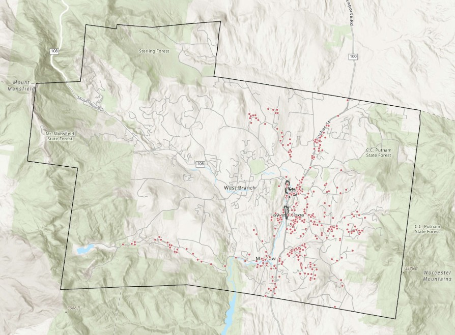
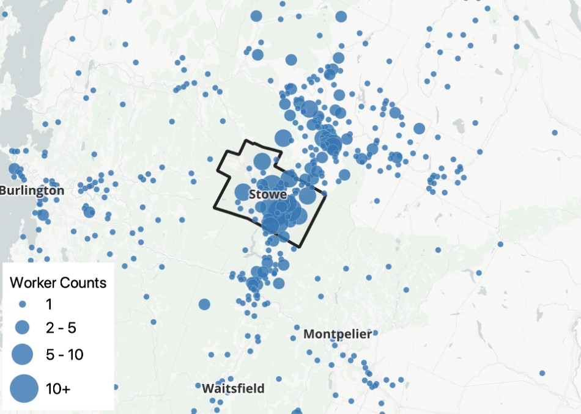

Housing is fundamental to Stowe’s vision for a sustainable community.
To sustain and advance the community’s vision for itself, Stowe needs attainable housing for:
- Families with kids to enroll in local schools
- Workers to staff local businesses
- Local seniors who need to downsize
- Young adults who grew up here and want to stay or come back
- Tax base to help fund necessary municipal services and investments
- Full-time residents to join boards and lead community organizations
 Draft vision and action priorities from Stowe 2050 planning process.
Draft vision and action priorities from Stowe 2050 planning process.
Stowe is building at the right pace - but many new units are not going to full-time residents.
Stowe has built more than 500 units over the past decade. Continuing at this pace would provide enough units to keep up with potential growth over the next decade. However, most new units built in Stowe are absorbed as second homes and vacation rentals.
Midday is the busiest time of day, with the most visitors coming at 7PM.
Non-homestead properties outnumber and out-compete homesteads.
Only about ⅓ of residential properties file homestead exemptions.
According to local realtors, as few as 1 in 10 clients are looking for full-time residence in Stowe (the rest are second home buyers).
The map at right indicates the 343 non-homestead properties that might be suitable as year-round housing (i.e. less than 3,000sf).

Non-homestead parcels particularly suitable for year-round housing are most concentrated in and around village centers.
Housing is completely unaffordable for most existing and prospective full-time residents.
This chart compares the median listing price in Stowe with the home value attainable to a household earning the median household income. A wider gap means higher barrier to entry for first-time homebuyers and increased risk that an existing resident might be priced out of the community if they choose or need to move to a different house.
Median income households have been priced out of the local market for more than a decade. This chart also includes a line tracking prices affordable to the typical household interested in moving to Stowe full-time (earning an estimated double the median household income). These more affluent buyers could afford housing in Stowe until the Covid pandemic, at which point Stowe became unaffordable to nearly all potential full-time residents.
The median home price of $926k is unattainable to residents in virtually all local professions.
Stowe’s median home price is over $900k, a figure even local lawyers and computer science workers would struggle to afford. Workers in lower paying - but still traditionally middle class - jobs have no choice but to live outside of Stowe despite working local jobs that contribute to the economy and community.
Most of Stowe’s local workforce commutes from out of town, including some who travel long distances.
About three quarters of Stowe’s workforce lives outside of town. Though detailed spatial income data is not available for these workers, anecdotal reports suggest most of the lower-income workforce resides to the north and east of Stowe while the higher-income workforce resides south and west. Additionally, the number of extremely long commutes has gradually increased over the years, suggesting some workers have to travel further from Stowe to find housing they can afford.
15-20% of Stowe residents worked from home (2023 Census ACS 5-year). This data does not account for many seasonal workers such as J1 Visa holders who often live in employer-sponsored dormitories and thus somewhat outside the competitive housing market.

Where people live who work in Stowe.
The Stowe population is aging rapidly, with a diminishing share of fewer young adults and families.
Like many other parts of the country, most of Stowe’s growth is among seniors aged 65 and above. There is some growth among other cohorts but the young adult population (20-34) is projected to continue declining.
Each age group has different housing preferences, such as larger homes for families or a mix of smaller ownership and rental options for young adults and seniors interested in downsizing.
This chart illustrates trends in population by age cohort, both historic and projected. The projection is based on recent trends extended. Depending on economic, policy, and other conditions, the future age distribution may vary over time.
The housing stock needs to be rebalanced to reflect preferences of a growing senior population.
Households aged 50+ constitute nearly all of Stowe’s projected net-new household growth over the next decade. Those in this cohort interested in moving to a new unit tend to prefer smaller homes with fewer bedrooms and less maintenance requirements, such as attached single family and multifamily apartment and condo options.
While detached single family homes will always represent an important part of the housing stock, Stowe will need a higher proportion of smaller alternatives to keep up with the rapidly growing senior population over the next decade.
School enrollment is at risk of declining without new families moving to Stowe.
While Stowe’s school enrollment has been holding steady for some time, declining numbers of young households - especially in the 20-34 age group - could foreshadow fewer new families entering the school system in the future.
Indeed, enrollment among K-2 grades has been dropping significantly over the past several years. This could be a trailing indicator of many fewer new families moving to Stowe since Covid a few years ago, when many of today’s kindergarteners were born. The more directly the correlation between a spike in housing prices and a decline in young student enrollees, the more difficult it may prove to reverse this trend.
Beyond impacting school stability and community sustainability, declining enrollment contributes to higher taxes on homestead households. State school funding issued on a per-pupil basis, so fewer students means more burden on homestead taxpayers to pick up any slack in the local school budget.
There are numerous barriers to affordable housing production and access in Stowe.
Costs: Construction costs and labor shortages are driving up prices and diverting resources and investment to second home construction.
Competition: Existing and prospective full-time residents cannot compete with second home and short-term rental markets.
Land: Tier 1 areas where higher density is allowed are limited in scale and don’t include significant development opportunity sites.
Infrastructure: There is sufficient sewer capacity - and water in most places - but access is largely limited to the Mountain Road corridor.
Legal structure: State law and tax rules limit the Town’s ability to raise funds and provide financing incentives.
Funding: Federal and state affordable housing subsidies are scarce and competitive.
Sentiment: The community lacks a clear vision of what it wants, where, and how, delaying or discouraging development.
Stowe needs an “all of the above” strategic plan.
Zoning: Expand housing capacity along Mountain Road and accommodate more infill opportunities such as “missing middle” and ADUs.
Mixed-income: Take advantage of the second home market’s high cost tolerance to cross subsidize affordable units with market rate.
Trust fund: Establish and contribute to a discretionary housing trust fund.
Manage STRs: Cap the short-term rental supply, manage allocation of new permits, and restrict permit transfers.
Vision: Clarify the Town’s housing vision and define what the community wants where for more predictability.
Public land: Develop town-owned land as affordable or mixed-income housing with conditions.
Finance: Establish “perpetually affordable housing” as a basis for public financing tools like TIFs (catalytic infrastructure investment).
Preserve: Explore a voluntary deed restriction program.
Advocate: Continue lobbying at the State House to support ongoing statewide housing reform but also to highlight Stowe’s unique circumstances and constraints.
Partner: Expand partnerships with affordable housing developers and providers, such as Downstreet.